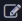

Tiny-LSM Lab

0 Tiny-LSM是什么?
Tiny-LSM是一个基于LSM Tree的开源教学KV存储引擎, 除LSM Tree的基础功能外, 还支持MVCC、WAL、崩溃恢复、Redis兼容等功能。本实验是基于作者原本实验的代码进行改造后的Lab课程。
LSM Tree（Log-Structured Merge-Tree）是一种适用于磁盘存储的数据结构，特别适合于需要高吞吐量的写操作的场景。它由Patrick O'Neil等人于1996年提出，广泛应用于NoSQL数据库和文件系统中，如LevelDB、RocksDB和Cassandra等。LSM Tree的主要思想是将数据写入操作日志（Log），然后定期将日志中的数据合并到磁盘上的有序不可变文件（SSTable）中。这些SSTable文件按层次结构组织，数据在多个层次之间逐步合并和压缩，以减少读取时的查找次数和磁盘I/O操作。
有关LSM Tree的进一步背景和介绍请参见LSM Tree 概览
本实现项目Tiny-LSM完成了包括内存表（MemTable）、不可变表（SSTable）、布隆过滤器（Bloom Filter）、合并和压缩（Compaction）等LSM Tree的核心组件，并在此基础上添加了额外的功能博客, 包括:
- 实现了
ACID事务 - 实现了
MVCC多版本并发控制 - 实现了
WAL日志和崩溃恢复 - 基于
KV存储实现了Redis的Resp协议兼容层 - 基于
Resp协议兼容层实现了redis-server服务
⭐ 请支持我们的项目！
如果您觉得本
Lab不错, 请为Tiny-LSM点一个⭐。项目实验制作耗费了我很大精力，作者非常需要您的鼓励❤️, 您的支持是我更新的动力😆
1 本实验的目的是什么?
本实验的最终目标是实现一个基于LSM Tree的单机KV Store引擎。其功能包括:
- 基本的
KV存储功能，包括put、get、remove等。 - 持久化功能，构建的存储引擎的数据将持久化到磁盘中。
- 事务功能，构建的存储引擎将支持
ACID等基本事务特性 MVCC, 构建的存储引擎将支持MVCC对数据进行查询。WAL与崩溃恢复, 数据写入前会先预写到WAL日志以支持崩溃恢复Redis兼容, 本实验将实现Redis的Resp兼容层, 作为Redis后端。
2 本实验适合哪些人？
通过本实验，你可以学习到LSM Tree这一工业界广泛使用的KV存储架构, 适合数据库、存储领域的入门学习者。同时本实验包含了Redis的Resp协议兼容层、网络服务器搭建等内容，也适合后端开发的求职者。同时，本项目使用C++ 17特性, 使用Xmake作为构建工具，并具备完善的单元测试，也适合想通过项目进一步学习现代C++的同学。
3 本实验的前置知识？
本项目的知识包括：
- (必备): 到
C++17为止的常见C++新特性，（项目的配置文件指定的标准为C++20, 但其只在单元测试中使用, 项目核心代码只要求C++17即可） - (必备)：常见的数据结构与算法知识
- (建议): 数据库的基本知识，包括事务特性、
MVCC的基本概念 - (建议):
Linux系统编程知识，本实验使用了系统底层的mmap等IO相关的系统调用 - (可选)：
Xmake的使用, 本实验的构建工具为Xmake, 若你想自定义单元测试或引入别的库, 需要手动在Xmake中配置。 - (可选):
Redis基本知识, 本实验将利用kv存储接口实现Redis后端, 熟悉Redis有助于实验的理解。 - (可选): 单元测试框架
gtest的使用, 如果你想自定义单元测试, 需要自行改配置。
4 实验流程
本实验的组织类似CMU15445 bustub, Lab提供了整体的代码框架, 并将其中某些组件的关键函数挖空并标记为TODO, 参与Lab的同学需要按照每一个Lab的指南补全缺失的函数, 并通过对应的单元测试。
同样类似CMU 15445, 后面的Lab依赖于前一个Lab的正确性, 而实验提供的单元测试知识尽量考虑到了各种边界情况, 但不能完全确保你的代码正确, 因此必要时, 你需要自行进行单元测试补充以及debug。
在目前的
Lab中, 你确实可以从原仓库Tiny-LSM的complete分支直接查看Lab实验的答案, 但作者不希望你如此做, 这样你将无法深刻理解实验设计的思路和相关知识。并且, 作者自己实现的代码中的崩溃恢复部分存在bug, 且其余部分并非最佳方案。（猜猜作者是不是故意的😏）
在了解完这些以后, 你可以开启下一章Lab 0 环境准备的学习。
5 项目交流与讨论
如果你对本Lab有疑问, 欢迎在GitHub Issues中提出问题。也欢迎加入次实验的QQ讨论群 。如果你想参与Lab的开发, 欢迎通过QQ群或者作者邮件: 📧邮件 联系。
6 推荐课程
这里给出作者推荐的相关开源课程, 供你参考学习:
- mini-lsm 迟先生用
Rust实现的LSM Tree课程, 其代码质量非常高, 本课程的很多设计也参考了Mini-LSM, 适合想用Rust实现LSM Tree的同学学习。 - TinyCoroLab, 基于
io_uring的现代C++协程的开源课程, 适合学习协程及的各种现代C++新特性。 - CMU 15445 经典CMU的数据库课程, 不解释了。
- MIT 6.824 MIT的经典分布式课程。
- Tiny-KV PingCap出品的分布式KV数据库教程, 算是MIT 6.824的升级版。
7 贡献者
非常感谢本项目贡献过源码的网友:
如果你在阅读本教程文档中发现错误, 可以直接点击文档右上角的, 其会引导你进入对应分支对当前的md文件进行编辑和修改, 然后提交PR即可。